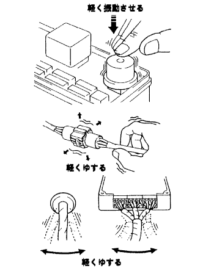
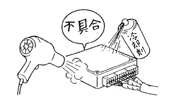
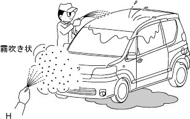

How to troubleshoot ECU control systems Simulation method of malfunctional phenomenon |
|  |
Parts and sensors
It is given vibration such as tapping lightly by hand on the estimated causal components, and checking for problems.
connector
Sprinkle the connector lightly up and down and left and right.
Wire harness
Lightly shake the wire harness up and down and left and right to check for problems.(Especially in the wire harness, focus on the base of the connector, the fulcrum of the vibration, and the penetration part of the body.)
|  |
Use a hairdryer or a coolant to heat or cool the estimated defective parts to check if there is a problem.
|  |
Put water on the vehicle to check if there is any problem.
The electrical components such as the heater brois, headlamps, and rear defoga are activated to increase the electric load, and check for problems.